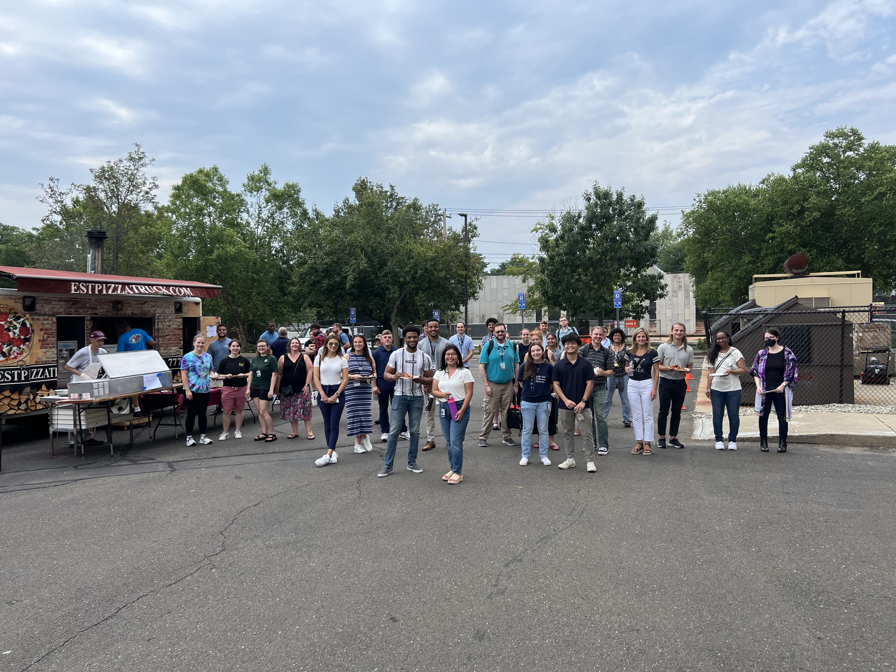
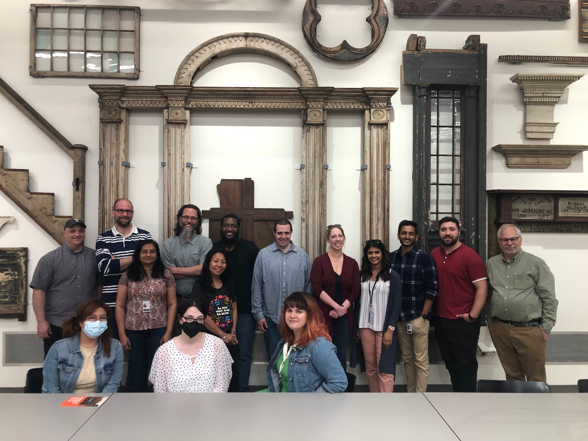
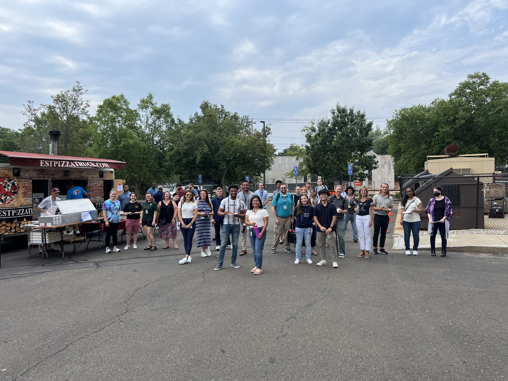
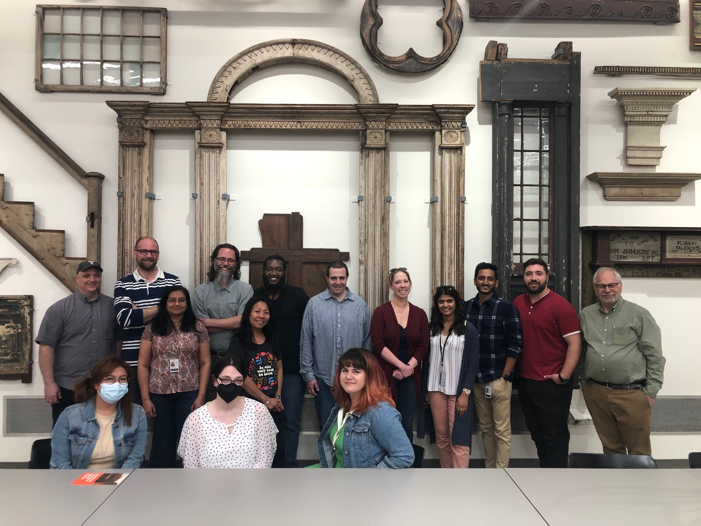

About Me
Hi, I'm Mohammad Atohmoshli
Software Engineer intern | Student and Academic Support Systems Team
I am a highly motivated and enthusiastic individual with a passion for information and technology. My experience as a math tutor has honed my problem-solving skills, and I have a strong background in mathematics and coding. Currently pursuing a Computer Science/Cybersecurity with miner in mathematics degree at Southern Connecticut State University, I am dedicated to student success and have been recognized with awards for my achievements.
Skills
Experience
Education
Awards
- Mathematics
I have a strong background in mathematics and experience as a math tutor, which enhances my problem-solving abilities and analytical skills. - Coding
My proficiency in coding languages equips me with valuable technical expertise for software development, data analysis, and programming-related tasks. - Tutoring
As a skilled tutor, I am adept at developing effective teaching strategies, evaluating educational plans, and facilitating student improvement and success. - Communication Skills
The ability to convey ideas clearly and effectively, fostering strong relationships and minimizing misunderstandings in the workplace. - Adaptability and Flexibility
Embracing change and adjusting to new circumstances, enabling professionals to respond to challenges with resilience and openness to learning and growth.
- Current
Software Engineer intern at Yale ITS - 2019-Current
Math Tutor at Gateway Community College
- Aug 2021 - May/2024
Southern Connecticut State University — BS-Computer Science/Cybersecurity - Aug 2019 - May 2022
Gateway Community College — Mathematics Studies Degree - Oct 2016 - June 2019
West Haven High School — High School Diploma
- 2018
Mathematic: Top Student Score (WHHS)
My Projects

Page-Builder
Page Builder is a tool to create student self service web pages. With team’s help built, tested and deployed three web pages - Master Promissory Notes (MPN), students need to submit these pages for Yale to process their loans.1.Law MPN - used by Law Students
2.Med MPN - used by Med Students
3.Other MPN - used by Others (non-Med, non-Law) Students
Mentor: Nishanth Yellu and Jennie Berberena

Teaching Fellow System
Teaching Fellow Systems is in the process of technology upgrade. For testing the app - helped in creating the test scenarios and test plans for each application functions.
Mentor: Sreelatha Vankayala

SQL (Structured Query Language)
Learned to create relational tables, inserted meaningful data, and created queries to retrieve data, solved two SQL assignments. Used Oracle database.
Mentor: Bob Bond


 


